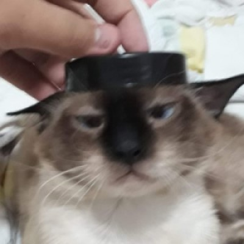
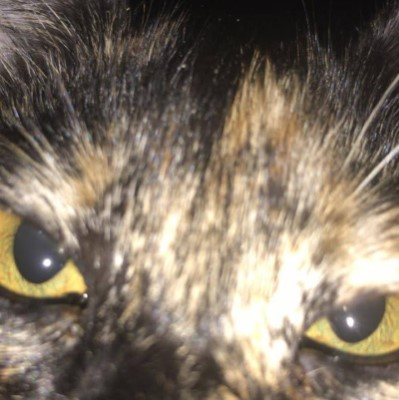
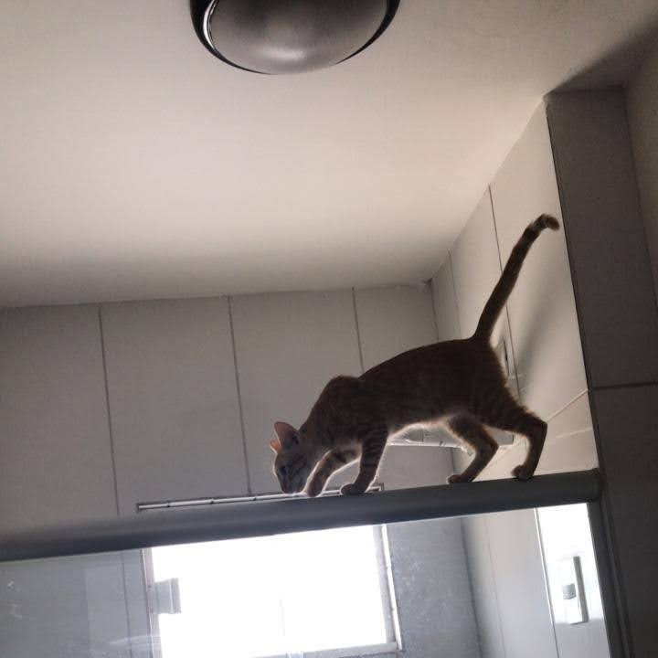
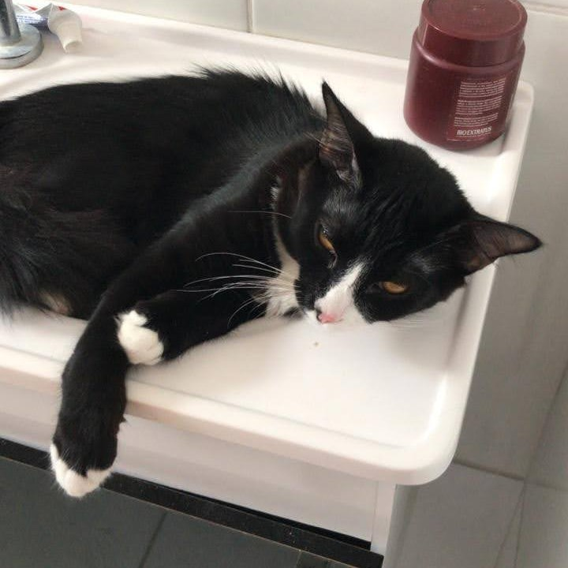
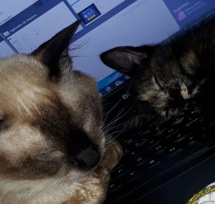
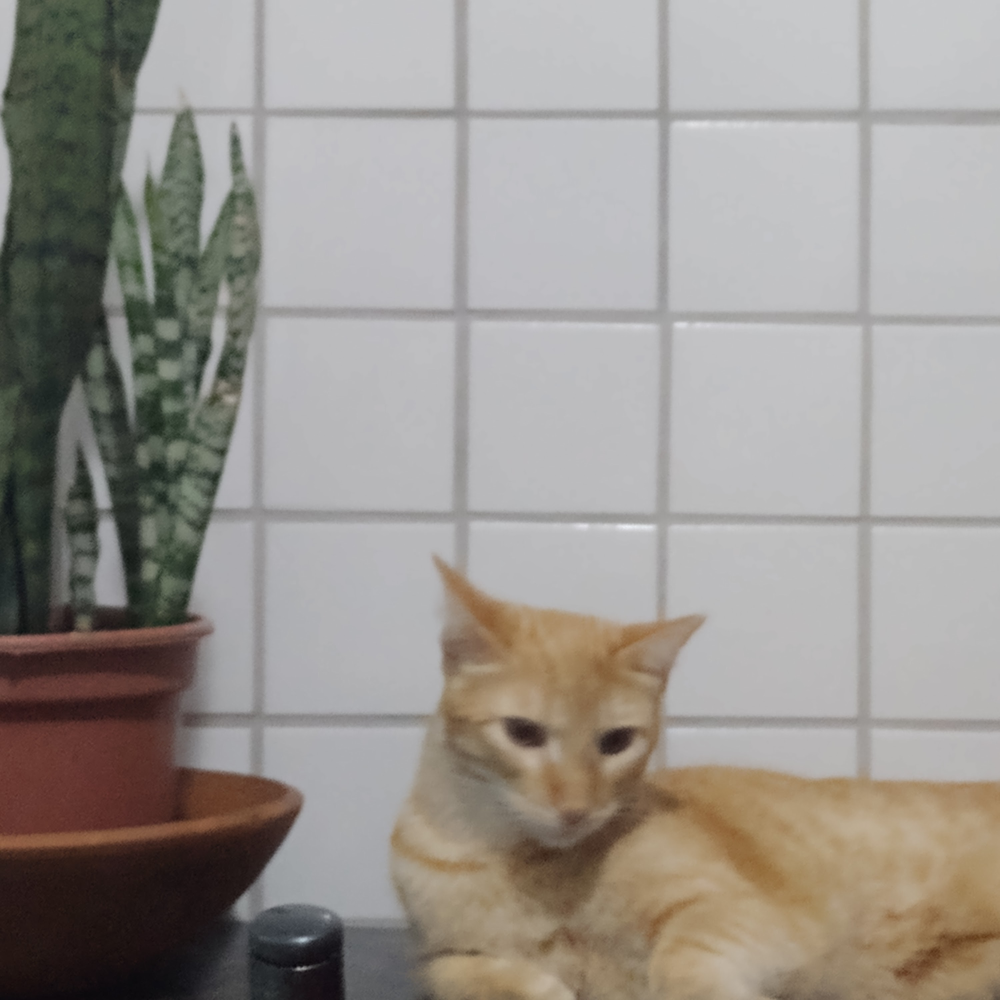

Cat Photos

Tarsila wearing a rabbi's hat on her head

Canela after misuse of catnip

Gnar spidercat

Volibear drunk with a hangover

Canela and Tarsila sleeping in the setup

Gnar and a Saint George's Sword